وحقوق محفوظة
حقوق الصور
كل صورة في ريش حقيقية، وموثقة بالمصور والترخيص والمصدر. نؤمن أن جمال الموقع لا يبرر تجاهل جهد من التقط هذه اللحظات.
الصور مصدرها Flickr وWikimedia Commons، وتستخدم هنا وفق تراخيص المشاع الإبداعي أو الملكية العامة. أعدنا تحجيم بعض الصور لتسريع التحميل فقط، دون تعديل جوهري في مضمونها.
٢١ صورة، و٢١ مصدرًا.
الجدول مرتب حسب اسم الملف في الموقع. اضغط على اسم المصور أو الترخيص للوصول إلى الصفحة الأصلية وتفاصيل الاستخدام.
| الصورة | العنوان الأصلي | المصور | الترخيص | المصدر |
|---|---|---|---|---|
| A love birds' kiss (Cockatiels) | Jinterwas | CC BY 2.0 | Flickr | |
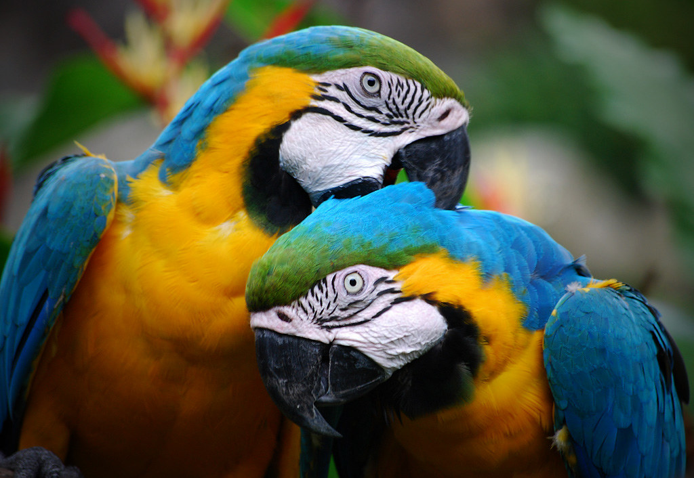 |
Colorful Parrots Couple | Riza Nugraha | CC BY 2.0 | Flickr |
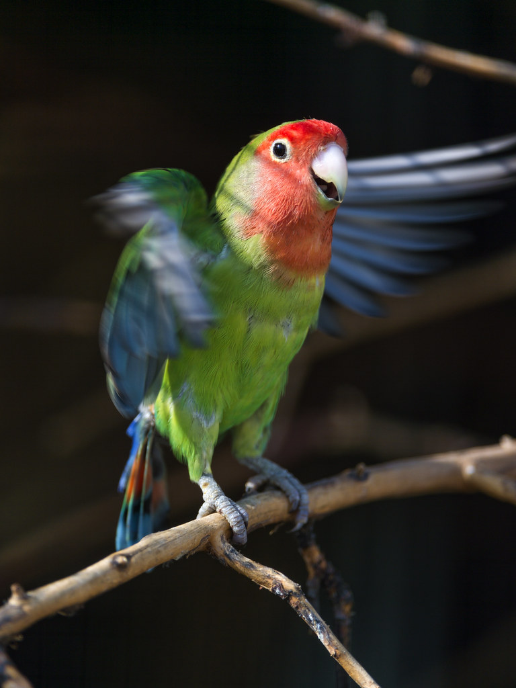 |
Peach-faced lovebird about to fly away | Tambako The Jaguar | CC BY-ND 2.0 | Flickr |
| Cockatiel | Jean Mottershead | CC BY-NC-ND 2.0 | Flickr | |
| Eastern Rosella | zosterops | CC BY-NC 2.0 | Flickr | |
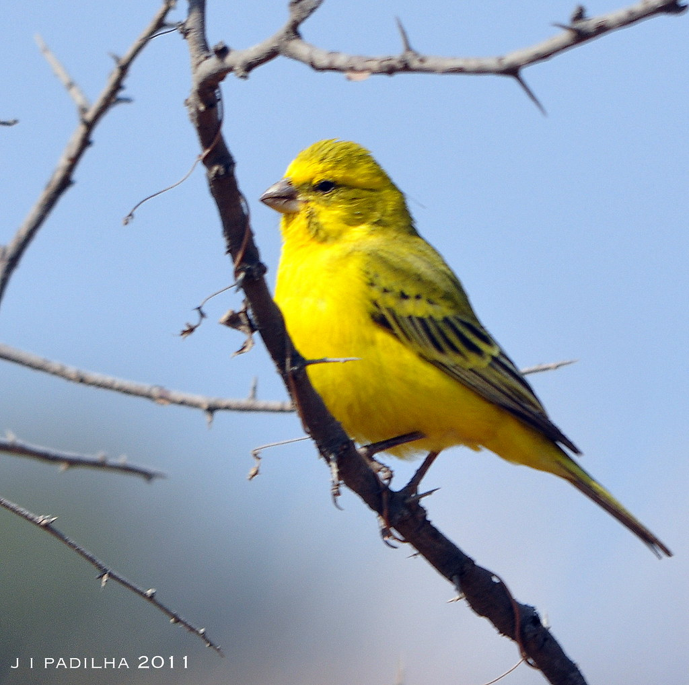 |
Yellow Canary | Tude e João | CC BY-NC-SA 2.0 | Flickr |
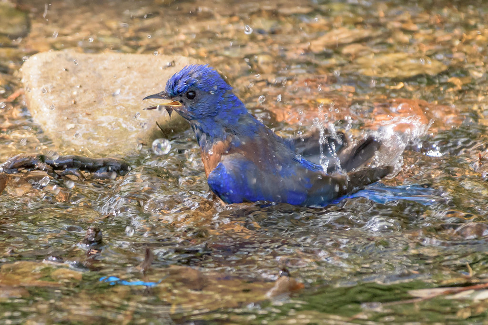 |
Western Bluebird taking a bath | Becky Matsubara | CC BY 4.0 | Flickr |
| Captive parrots eat a medley of commercial food, fresh fruits, seeds, nuts and vegetables | U.S. Fish and Wildlife Service | Public Domain Mark 1.0 | Flickr | |
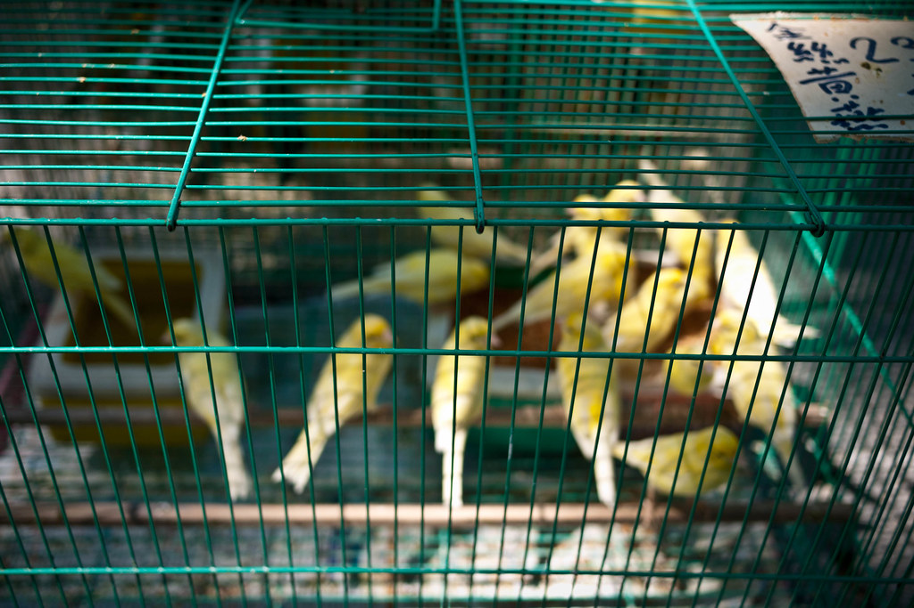 |
Canary cage | Neil Ballantyne | CC BY-NC-SA 2.0 | Flickr |
| Scarlet Macaw in Flight | Wayne S. Grazio | CC BY-NC-ND 2.0 | Flickr | |
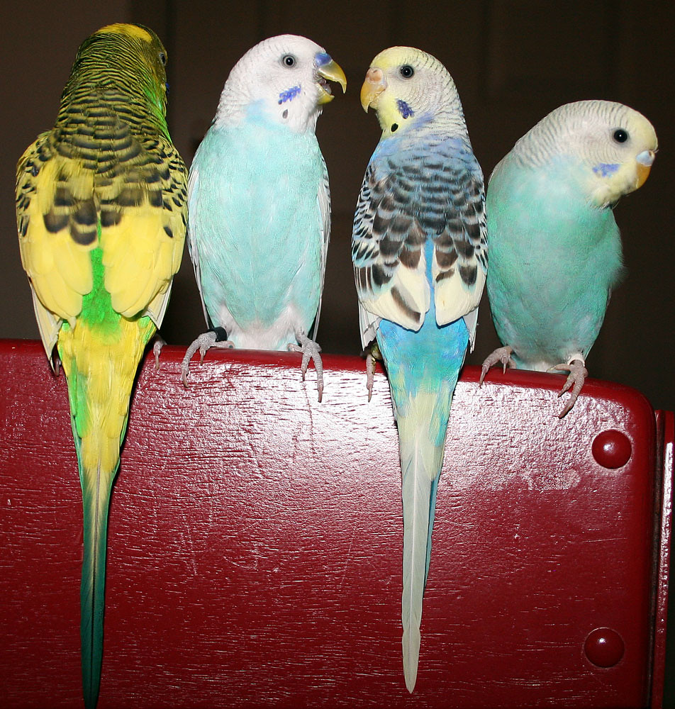 |
Colors | PuppiesAreProzac | CC BY-SA 2.0 | Flickr |
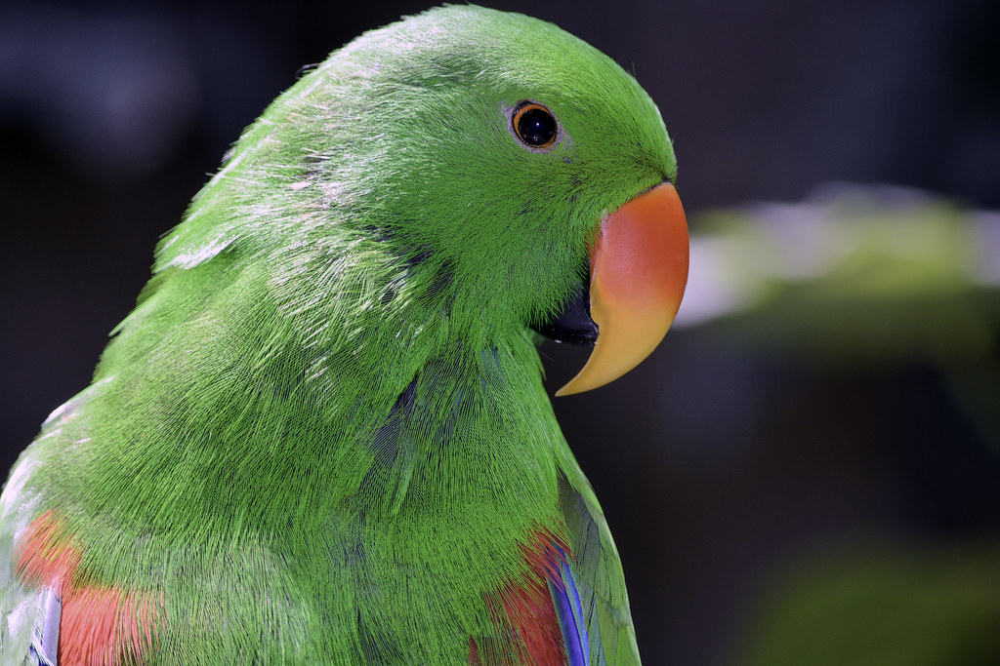 |
Eclectus Parrot Portrait | Charles Patrick Ewing | CC BY 2.0 | Flickr |
| Parrot on hand front | Chiara Coetzee | CC0 1.0 | Flickr | |
| Parrot on hand with girl behind | Chiara Coetzee | CC0 1.0 | Flickr | |
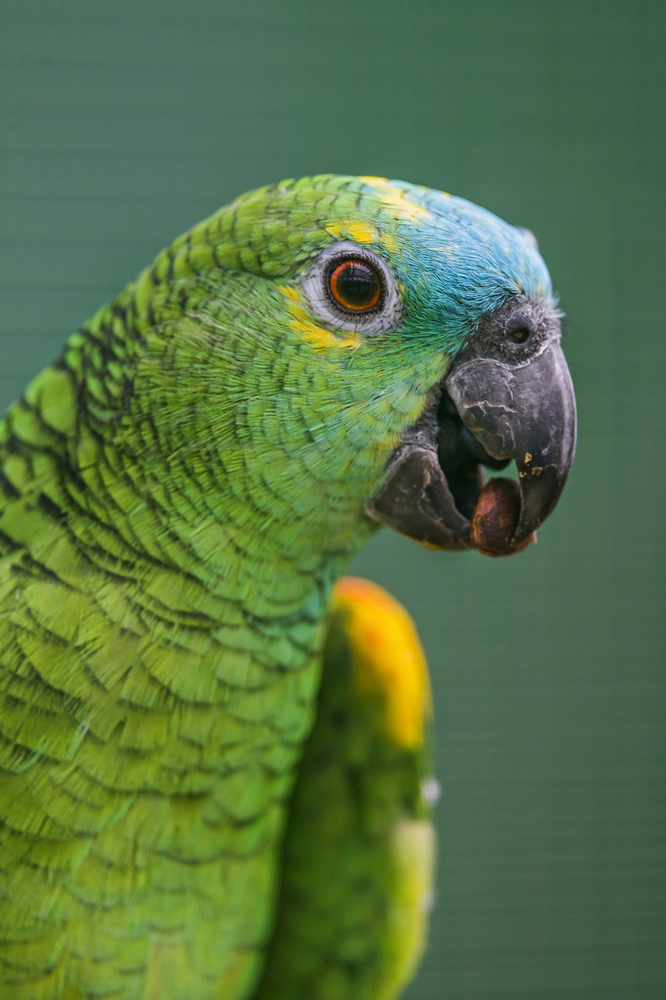 |
Blue-fronted Amazon Parrot portrait | Tambako The Jaguar | CC BY-ND 2.0 | Flickr |
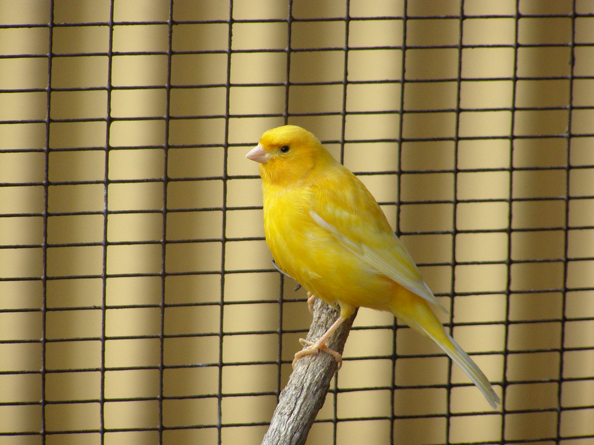 |
Yellow Canary | David Innes | CC BY-NC-ND 2.0 | Flickr |
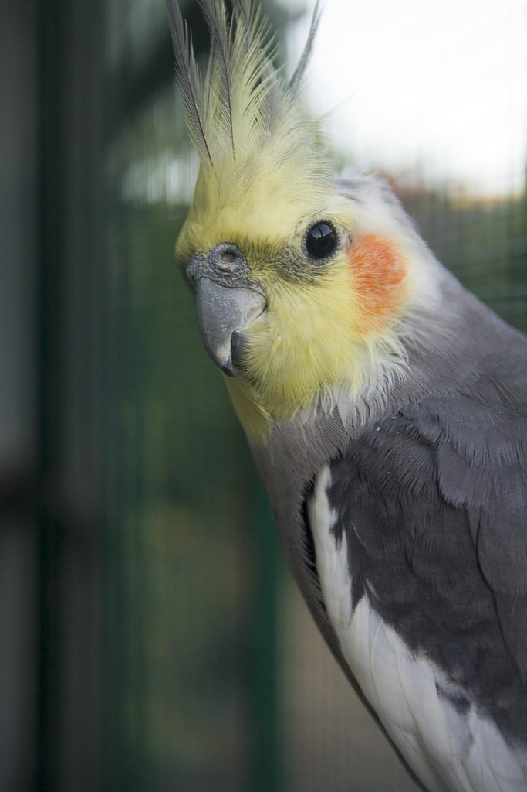 |
Curious Cockatiel | Andrew Braithwaite | CC BY 2.0 | Flickr |
| Grey-headed Lovebird (Agapornis cana), Ankarafantsika, Madagascar | Frank Vassen | CC BY 2.0 | Flickr | |
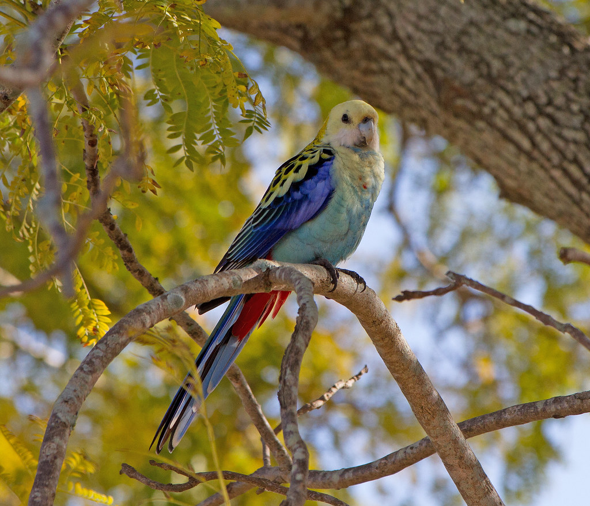 |
Pale-headed Rosella | Michael Jefferies | CC BY-NC 2.0 | Flickr |
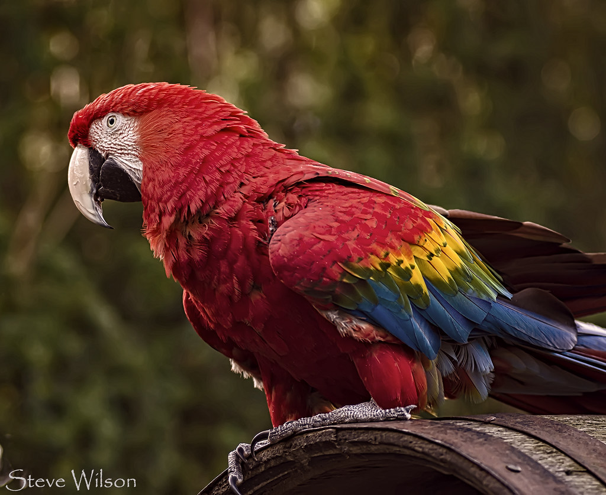 |
Scarlet Macaw | Steve Wilson | CC BY 2.0 | Flickr |
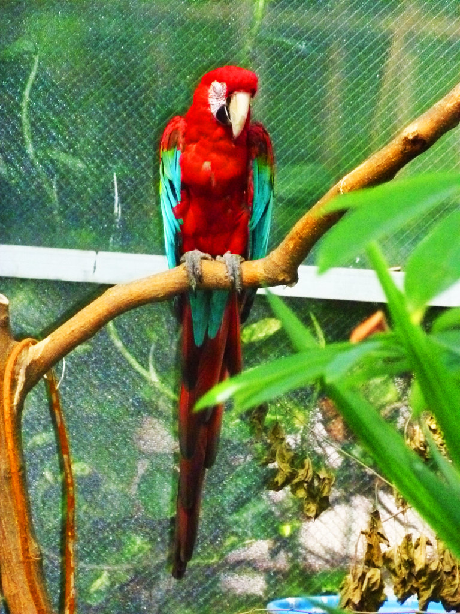 |
Parrot Sleeping | Katie Williams | CC BY-ND 2.0 | Flickr |
جميع الصور من Flickr، ما عدا الصور التي تحمل ترخيص Public Domain Mark أو CC0 فهي ملكية عامة. لم نضف نصًا أو رسومات فوق الصور الأصلية.
دليل سريع للتراخيص.
كل ترخيص له شروط؛ هذه ليست نصًا قانونيًا، لكنها تذكير بما تعنيه الرموز في الجدول.
| الترخيص | المعنى | ما يسمح به |
|---|---|---|
| CC BY | إسناد | الاستخدام والتعديل حتى لأغراض تجارية، مع ذكر المصور. |
| CC BY-SA | إسناد — مشاركة بالمثل | الاستخدام والتعديل بشرط نشر العمل الجديد بالترخيص نفسه. |
| CC BY-ND | إسناد — بلا اشتقاق | الاستخدام كما هو مع الإسناد، دون تعديل جوهري. |
| CC BY-NC | إسناد — غير تجاري | الاستخدام والتعديل لأغراض غير تجارية فقط. |
| CC BY-NC-SA | إسناد — غير تجاري — مشاركة بالمثل | استخدام غير تجاري مع الإسناد ونشر الاشتقاق بالترخيص نفسه. |
| CC BY-NC-ND | إسناد — غير تجاري — بلا اشتقاق | استخدام غير تجاري كما هو، مع الإسناد. |
| CC0 / Public Domain | ملكية عامة | استخدام حر دون شروط إسناد إلزامية، ونذكر المصدر احترامًا. |
بعض الصور تستخدم ترخيصًا يمنع الاستخدام التجاري. ريش موقع محتوى تعليمي غير تجاري، ولا نبيع الصور أو نضمّنها في منتجات مدفوعة.
صور ريش... ليست ملك ريش.
نصوص الموقع من إعداد فريق ريش، أما الصور فحقوقها لمصوريها. إن أردت استخدام صورة، فاذهب إلى مصدرها الأصلي والتزم بترخيصها.
مسموح
- مشاركة رابط الصفحة مع الإشارة إلى ريش.
- اقتباس قصير من النصوص لأغراض تعليمية مع رابط.
- استخدام الصور وفق ترخيصها الأصلي بعد زيارة المصدر.
غير مسموح
- إعادة نشر نصوص الموقع كاملة بلا إذن.
- بيع الصور أو استخدامها تجاريًا دون مراجعة ترخيصها.
- إزالة أسماء المصورين أو ادعاء ملكية الصور.